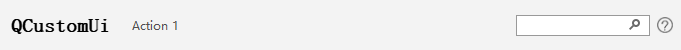

QCtmNavigationBar Class
QCtmNavigationBar类似于QToolBar，它可以配合QCtmWindow和QCtmNavigationPane使用. More...
| Header: | #include <QCtmNavigationBar.h> |
| Inherits: | QWidget |
Public Types
| enum | ActionPosition { Left, Center, Right } |
Public Functions
| QCtmNavigationBar(QWidget *parent) | |
| virtual | ~QCtmNavigationBar() |
| QAction * | actionAt(int index, QCtmNavigationBar::ActionPosition pos) const |
| QRect | actionRect(QAction *action) |
| void | addAction(QAction *action, QCtmNavigationBar::ActionPosition pos) |
| QAction * | addAction(const QIcon &icon, const QString &text, QCtmNavigationBar::ActionPosition pos) |
| QAction * | addAction(const QString &text, QCtmNavigationBar::ActionPosition pos) |
| QAction * | addHelp(const QUrl &filePath, const QIcon &icon, QCtmNavigationBar::ActionPosition pos = Right) |
| QAction * | addLogo(const QIcon &icon, QCtmNavigationBar::ActionPosition pos = Left) |
| void | addPane(QAction *action, QCtmNavigationBar::ActionPosition pos, QCtmNavigationSidePane *pane) |
| QAction * | addPane(const QIcon &icon, const QString &text, QCtmNavigationBar::ActionPosition pos, QCtmNavigationSidePane *pane) |
| QAction * | addPane(const QString &text, QCtmNavigationBar::ActionPosition pos, QCtmNavigationSidePane *pane) |
| QAction * | addSeparator(QCtmNavigationBar::ActionPosition pos) |
| QAction * | addUser(const QIcon &icon, const QString &text, QCtmNavigationBar::ActionPosition pos = Right) |
| int | count(QCtmNavigationBar::ActionPosition pos) const |
| const QSize & | iconSize() const |
| int | indexOf(QAction *action) const |
| void | insertAction(int index, QAction *action, QCtmNavigationBar::ActionPosition pos) |
| QAction * | insertAction(int index, const QIcon &icon, const QString &text, QCtmNavigationBar::ActionPosition pos) |
| QAction * | insertAction(int index, const QString &text, QCtmNavigationBar::ActionPosition pos) |
| QAction * | insertHelp(int index, const QUrl &filePath, const QIcon &icon, QCtmNavigationBar::ActionPosition pos = Right) |
| QAction * | insertLogo(int index, const QIcon &icon, QCtmNavigationBar::ActionPosition pos = Left) |
| void | insertPane(int index, QAction *action, QCtmNavigationBar::ActionPosition pos, QCtmNavigationSidePane *pane) |
| QAction * | insertPane(int index, const QIcon &icon, const QString &text, QCtmNavigationBar::ActionPosition pos, QCtmNavigationSidePane *pane) |
| QAction * | insertPane(int index, const QString &text, QCtmNavigationBar::ActionPosition pos, QCtmNavigationSidePane *pane) |
| QAction * | insertSeparator(int index, QCtmNavigationBar::ActionPosition pos) |
| QAction * | insertUser(int index, const QIcon &icon, const QString &text, QCtmNavigationBar::ActionPosition pos = Right) |
| void | setIconSize(const QSize &size) |
Signals
| void | iconSizeChanged(const QSize &size) |
Reimplemented Protected Functions
| virtual void | actionEvent(QActionEvent *event) override |
Detailed Description
The navigation bar screenshot:

Member Type Documentation
enum QCtmNavigationBar::ActionPosition
描述Action的显示位置.
| Constant | Value | Description |
|---|---|---|
QCtmNavigationBar::Left | 0 | 靠左显示. |
QCtmNavigationBar::Center | 1 | 居中显示. |
QCtmNavigationBar::Right | 2 | 靠右显示. |
Member Function Documentation
QCtmNavigationBar::QCtmNavigationBar(QWidget *parent)
构造一个父对象为 parent 的QCtmNavigationBar.
[signal] void QCtmNavigationBar::iconSizeChanged(const QSize &size)
当图标大小发生改变时发送该信号 size.
Note: Notifier signal for property iconSize.
See also setIconSize.
[virtual] QCtmNavigationBar::~QCtmNavigationBar()
销毁当前QCtmNavigationBar对象.
QAction *QCtmNavigationBar::actionAt(int index, QCtmNavigationBar::ActionPosition pos) const
返回 pos index 位置的action.
See also addAction and insertAction.
[override virtual protected] void QCtmNavigationBar::actionEvent(QActionEvent *event)
QRect QCtmNavigationBar::actionRect(QAction *action)
返回 action 的区域.
void QCtmNavigationBar::addAction(QAction *action, QCtmNavigationBar::ActionPosition pos)
This function overloads addAction.
将 action 添加到 pos 位置.
See also QWidget::addAction.
QAction *QCtmNavigationBar::addAction(const QIcon &icon, const QString &text, QCtmNavigationBar::ActionPosition pos)
This function overloads addAction.
该重载函数创建并返回一个图标为 icon, 文本为 text 的action，并显示到 pos 位置.
See also QCtmNavigationBar::addAction.
QAction *QCtmNavigationBar::addAction(const QString &text, QCtmNavigationBar::ActionPosition pos)
This function overloads addAction.
该重载函数创建并返回一个文本为 text 的action，并显示到 pos 位置.
See also QCtmNavigationBar::addAction.
QAction *QCtmNavigationBar::addHelp(const QUrl &filePath, const QIcon &icon, QCtmNavigationBar::ActionPosition pos = Right)
添加并返回一个图标为 icon 的帮助action到 pos 位置，点击时打开 filePath 的帮助文档.
See also insertHelp.
QAction *QCtmNavigationBar::addLogo(const QIcon &icon, QCtmNavigationBar::ActionPosition pos = Left)
添加并返回一个图标为 icon, 显示位置为 pos 的Logo action.
See also insertLogo.
void QCtmNavigationBar::addPane(QAction *action, QCtmNavigationBar::ActionPosition pos, QCtmNavigationSidePane *pane)
在 pos 位置添加一个 action 并与 pane 绑定.
See also insertPane.
QAction *QCtmNavigationBar::addPane(const QIcon &icon, const QString &text, QCtmNavigationBar::ActionPosition pos, QCtmNavigationSidePane *pane)
This function overloads addPane.
添加并返回一个图标为 icon, 文本为 text 的action，显示到 pos 位置，并且与 pane 绑定.
See also QCtmNavigationBar::addPane.
QAction *QCtmNavigationBar::addPane(const QString &text, QCtmNavigationBar::ActionPosition pos, QCtmNavigationSidePane *pane)
This function overloads addPane.
添加并返回一个文本为 text 的action，显示到 pos 位置，并且与 pane 绑定.
See also QCtmNavigationBar::addPane.
QAction *QCtmNavigationBar::addSeparator(QCtmNavigationBar::ActionPosition pos)
在 pos 位置添加一个分隔符.
See also insertSeparator.
QAction *QCtmNavigationBar::addUser(const QIcon &icon, const QString &text, QCtmNavigationBar::ActionPosition pos = Right)
添加并返回一个图标为 icon, 文本为 text, 显示位置为 pos 的用户action.
See also insertUser.
int QCtmNavigationBar::count(QCtmNavigationBar::ActionPosition pos) const
返回 pos 位置的action数量.
const QSize &QCtmNavigationBar::iconSize() const
返回Action图标的大小.
Note: Getter function for property iconSize.
See also setIconSize.
int QCtmNavigationBar::indexOf(QAction *action) const
返回 action 的序号.
void QCtmNavigationBar::insertAction(int index, QAction *action, QCtmNavigationBar::ActionPosition pos)
This function overloads insertAction.
该重载函数将 action 插入到 index 的位置，并显示到 pos 位置.
See also QWidget::insertAction.
QAction *QCtmNavigationBar::insertAction(int index, const QIcon &icon, const QString &text, QCtmNavigationBar::ActionPosition pos)
This function overloads insertAction.
该重载函数创建并返回一个图标为 icon, 文本为 text 的action，并插入到 index 位置，显示到 pos 位置.
See also QCtmNavigationBar::insertAction.
QAction *QCtmNavigationBar::insertAction(int index, const QString &text, QCtmNavigationBar::ActionPosition pos)
This function overloads insertAction.
该重载函数创建并返回一个文本为 text 的action，并插入到 index 位置，显示到 pos 位置.
See also QCtmNavigationBar::insertAction.
QAction *QCtmNavigationBar::insertHelp(int index, const QUrl &filePath, const QIcon &icon, QCtmNavigationBar::ActionPosition pos = Right)
插入并返回一个图标为 icon 的帮助action到 index, pos 位置，点击时打开 filePath 的帮助文档.
See also addHelp.
QAction *QCtmNavigationBar::insertLogo(int index, const QIcon &icon, QCtmNavigationBar::ActionPosition pos = Left)
插入并返回一个图标为 icon, 显示位置为 index, pos 的Logo action.
See also addLogo.
void QCtmNavigationBar::insertPane(int index, QAction *action, QCtmNavigationBar::ActionPosition pos, QCtmNavigationSidePane *pane)
插入一个 action 到 index 位置，显示到 pos 位置，并且与 pane 绑定.
See also insertAction.
QAction *QCtmNavigationBar::insertPane(int index, const QIcon &icon, const QString &text, QCtmNavigationBar::ActionPosition pos, QCtmNavigationSidePane *pane)
This function overloads insertPane.
插入并返回一个图标为 icon, 文本为 text 的action，并插入到 index 位置，显示到 pos 位置，并且与 pane 绑定.
See also QCtmNavigationBar::insertPane.
QAction *QCtmNavigationBar::insertPane(int index, const QString &text, QCtmNavigationBar::ActionPosition pos, QCtmNavigationSidePane *pane)
This function overloads insertPane.
插入并返回一个文本为 text 的action，并插入到 index 位置，显示到 pos 位置，并且与 pane 绑定.
See also QCtmNavigationBar::insertPane.
QAction *QCtmNavigationBar::insertSeparator(int index, QCtmNavigationBar::ActionPosition pos)
在 index, pos 位置插入一个分隔符.
See also addSeparator.
QAction *QCtmNavigationBar::insertUser(int index, const QIcon &icon, const QString &text, QCtmNavigationBar::ActionPosition pos = Right)
插入并返回一个图标为 icon, 文本为 text, 显示位置为 index, pos 的用户action.
See also addUser.
void QCtmNavigationBar::setIconSize(const QSize &size)
设置Action图标的大小 size.
Note: Setter function for property iconSize.
See also iconSize.